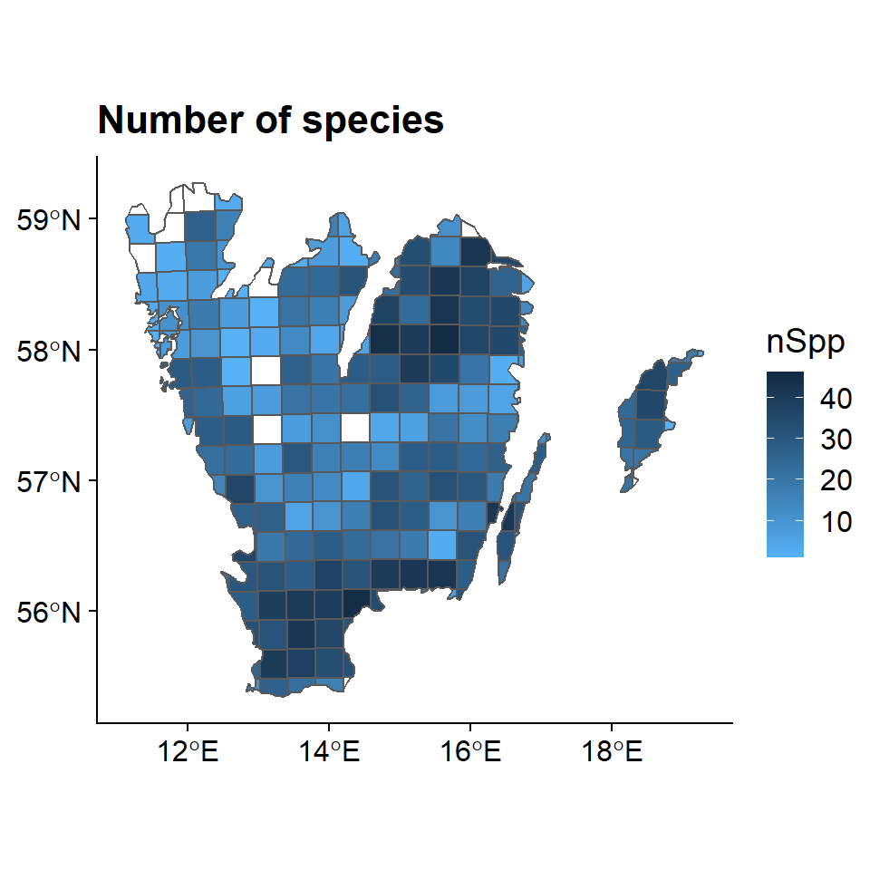

2 Example with opportunistic data on Dragonflies
In this example we are interested in exploring opportunistically collected data from the Swedish citizen science observation data portal - Artportalen.
2.1 Name searching
To begin, we want be sure there is an unequivocal way to find the species within the order Odonata and nothing else, so let’s search for it:
library(SBDI4R)
sx <- search_fulltext("odonata")## [1] "https://species.biodiversitydata.se/ws/search.json?q=odonata&fq=idxtype%3ATAXON"sx## Search metadata:
## totalRecords queryTitle
## 1 5 odonata
##
## Facet results:
## [1] "NULL"
##
## Search results:
## name commonNameSingle rank
## 1 "Odonata associated gemycircularvirus 1" "" "species"
## 2 "Odonata associated gemycircularvirus 2" "" "species"
## 3 "Bdellodes odonata Wallace & Mahon, 1976" "" "species"
## 4 "Odonata" "" "order"
## 5 "Ramalina fastigiata var. odonata Hue" "" "variety"
## guid
## 1 "9829523"
## 2 "10072832"
## 3 "8062407"
## 4 "789"
## 5 "7367071"we see there that other taxonomic definitions appear too, but only one order.
Let’s refine the search. To know the names of the search fields (that may not be
the same as returned column names) we can use the function sbdi_fields(fields_type = "general").
The search field we are looking for is “order_s.”
sx <- search_fulltext(fq="order_s:Odonata", page_size = 10)## [1] "https://species.biodiversitydata.se/ws/search.json?fq=order_s%3AOdonata&fq=idxtype%3ATAXON&pageSize=10"sx$data[,c( "name","scientificName", "guid", "rank")]## name
## 1 Gomphomacromia Brauer, 1864
## 2 Austropetalia Tillyard, 1916
## 3 Sogjutella Pritykina, 1980
## 4 Neuragrion Karsch, 1891
## 5 Xamenophlebia Pritykina, 1981
## 6 Lauromacromia Geijskes, 1970
## 7 Sympetrum Newman, 1833
## 8 Corduliochlora Marinov & Seidenbusch, 2007
## 9 Torrenticnemis Lieftinck, 1949
## 10 Cyanallagma Kennedy, 1920
## scientificName guid rank
## 1 Gomphomacromia Brauer, 1864 1429753 genus
## 2 Austropetalia Tillyard, 1916 1426725 genus
## 3 Sogjutella Pritykina, 1980 4799335 genus
## 4 Neuragrion Karsch, 1891 4302686 genus
## 5 Xamenophlebia Pritykina, 1981 4799353 genus
## 6 Lauromacromia Geijskes, 1970 1429769 genus
## 7 Sympetrum Newman, 1833 1428195 genus
## 8 Corduliochlora Marinov & Seidenbusch, 2007 4798599 genus
## 9 Torrenticnemis Lieftinck, 1949 1423625 genus
## 10 Cyanallagma Kennedy, 1920 1423468 genusNow we can download the taxonomic data (note that the search is case-sensitive):
tx <- taxinfo_download("order_s:Odonata",
fields = c("guid", "order_s","genus_s", "specificEpithet_s",
"scientificName", "canonicalName_s", "rank"),
verbose = FALSE)
tx <- tx[tx$rank == "species" & tx$genusS != "",] ## restrict to species and not hybridsNow tx is our complete species list.
2.2 Get the observations, filter the search, get quality assertions, plotting data on a map and save data
As usual we start by searching for the data resource we are interested in using
the function pick_filter(). This is an interactive query guiding you through
the many resources available to filtering your query (data resources, spatial
layers, and curated species lists).
library(SBDI4R)
fq_str <- pick_filter("resource")
# follow the instructions Follow the instruction. Your choices here would have been “in3” –> “dr5.”
Your variable fq_str will now contain a string “data_resource_uid:dr5.”
We only need data from 2000 to 2010
y1 <- 2000
y2 <- 2010
fq_str <- c(fq_str, paste0("year:[", y1, " TO ", y2,"]"))
# Note the square brackets are hard limitsSelect data – get records for Southern Sweden (Götaland).
Vector spatial layers (eg. polygons) can be imported in a number of different ways.
SBDI APIs take as search input polygons in the s.k. WKT Well Known Text
format. So the first step is to load a vector layer and transform it into a WKT string.
You could instead use the data we kindly provided in the SBDI4R package data("swe").
data("swe")
wGotaland <- swe$Counties$LnNamn %in% c("Blekinge", "Gotlands", "Hallands", "Jönköpings", "Kalmar", "Kronobergs", "Östergötlands", "Skåne", "Västra Götalands")
gotaland_c <- swe$Counties[wGotaland,]We could create the WKT string using the rgeos library:
library(rgeos)
wkt <- writeWKT(gotaland_c)Unfortunately, in this instance this gives a WKT string that is too long and won’t be accepted by the web service. Also, the shapefile we just got is projected in the coordinate system SWEREF99 TM, and the web service only accepts coordinates in a geodesic coordinate system WGS84. Instead, let’s construct the WKT string directly, which gives us a little more control over its format:
gotaland_c <- sf::as_Spatial(
sf::st_transform(
sf::st_as_sf(gotaland_c),
crs = sf::st_crs(4326)$wkt) )
gotaland <- rgeos::gUnaryUnion(gotaland_c)
# extract the polygons coordinates
nPol <- length(gotaland@polygons[[1]]@Polygons)
lonlat <- list()
for(p in seq(nPol)){
lonlat[[p]] <- gotaland@polygons[[1]]@Polygons[[p]]@coords
}
lonlat <- do.call(rbind, lonlat)
# create a convex hull of the polygon to reduce the length of the WKT string
gotaland_ch <- chull(lonlat)
lonlat <- lonlat[c(gotaland_ch, gotaland_ch[1]), ]
# create WKT string
# first join each lon-lat coordinate pair
wkt_temp <- apply(lonlat, 1, function(z) paste(round(z,4), collapse=" "))
# now build the WKT string
wkt <- paste("MULTIPOLYGON(((", paste(wkt_temp, collapse=","), ")))", sep="")
# NOTE: as of today, the SBDI APIs will only work properly if the polygon is
# submitted as a MULTIPOLYGONsbdi_fields("occurrence")[,1:2]## name dataType
## 1 abcd_identification_qualifier string
## 2 access_rights string
## 3 assertions string
## 4 assertions_missing string
## 5 assertions_passed string
## 6 assertions_unchecked string
## 7 basis_of_record string
## 8 behavior string
## 9 bibliographic_citation string
## 10 catalogue_number string
## 11 cl10038 string
## 12 cl10040 string
## 13 cl10041 string
## 14 cl10042 string
## 15 cl10046 string
## 16 cl10047 string
## 17 cl10048 string
## 18 cl10050 string
## 19 cl10051 string
## 20 cl10052 string
## 21 cl10053 string
## 22 cl10054 string
## 23 cl10055 string
## 24 cl10057 string
## 25 cl10058 string
## 26 cl10059 string
## 27 cl10061 string
## 28 cl10063 string
## 29 cl10064 string
## 30 cl10065 string
## 31 cl10066 string
## 32 cl10067 string
## 33 cl10068 string
## 34 cl10070 string
## 35 cl10071 string
## 36 cl10073 string
## 37 cl10074 string
## 38 cl10082 string
## 39 cl10083 string
## 40 cl10084 string
## 41 cl10087 string
## 42 cl10089 string
## 43 cl10090 string
## 44 cl10097 string
## 45 cl10101 string
## 46 cl10102 string
## 47 cl10104 string
## 48 class string
## 49 class_id string
## 50 collection_code string
## 51 collection_id string
## 52 collection_name string
## 53 collection_uid string
## 54 collector string
## 55 common_name string
## 56 common_name_and_lsid string
## 57 coordinate_uncertainty tdouble
## 58 country string
## 59 country_code string
## 60 county string
## 61 data_provider string
## 62 data_provider_uid string
## 63 data_resource string
## 64 data_resource_uid string
## 65 dataset_id string
## 66 dataset_name string
## 67 date_precision string
## 68 datum string
## 69 day string
## 70 disposition string
## 71 dynamic_properties string
## 72 el10000 tfloat
## 73 el10001 tfloat
## 74 el10002 tfloat
## 75 el10003 tfloat
## 76 el10004 tfloat
## 77 el10005 tfloat
## 78 el10006 tfloat
## 79 el10007 tfloat
## 80 el10008 tfloat
## 81 el10009 tfloat
## 82 el10010 tfloat
## 83 el10011 tfloat
## 84 el10012 tfloat
## 85 el10013 tfloat
## 86 el10014 tfloat
## 87 el10015 tfloat
## 88 el10016 tfloat
## 89 el10017 tfloat
## 90 el10018 tfloat
## 91 el10019 tfloat
## 92 el10020 tfloat
## 93 el10021 tfloat
## 94 el10022 tfloat
## 95 el10023 tfloat
## 96 el10024 tfloat
## 97 el10025 tfloat
## 98 el10026 tfloat
## 99 el10027 tfloat
## 100 el10028 tfloat
## 101 el10029 tfloat
## 102 el10030 tfloat
## 103 el10031 tfloat
## 104 el10032 tfloat
## 105 el10033 tfloat
## 106 el10034 tfloat
## 107 el10035 tfloat
## 108 el10036 tfloat
## 109 el10044 tfloat
## 110 elevation double
## 111 end_day_of_year string
## 112 establishment_means string
## 113 event_id string
## 114 event_remarks string
## 115 event_time string
## 116 family string
## 117 family_id string
## 118 field_number string
## 119 first_loaded_date tdate
## 120 genus string
## 121 genus_guid string
## 122 georeference_remarks string
## 123 georeferenced_by string
## 124 georeferenced_date string
## 125 geospatial_kosher string
## 126 habitat string
## 127 higher_classification string
## 128 higher_geography string
## 129 id string
## 130 identification_qualifier string
## 131 identification_remarks string
## 132 identified_by string
## 133 identified_date tdate
## 134 individual_count string
## 135 infraspecific_epithet string
## 136 institution_code string
## 137 institution_name string
## 138 institution_uid string
## 139 island string
## 140 island_group string
## 141 kingdom string
## 142 kingdom_id string
## 143 language string
## 144 last_load_date tdate
## 145 last_processed_date tdate
## 146 lat_long string
## 147 latitude tdouble
## 149 license string
## 150 location_according_to string
## 151 location_id string
## 152 location_remarks string
## 153 longitude tdouble
## 154 mappable string
## 155 max_depth_d tdouble
## 156 max_elevation_d tdouble
## 157 min_depth_d tdouble
## 158 min_elevation_d tdouble
## 159 min_elevation_d_rng tdouble
## 160 modified_date tdate
## 161 month string
## 162 multimedia string
## 163 municipality string
## 164 name_match_metric string
## 165 name_parse_type string
## 166 names_and_lsid string
## 167 occurrence_date tdate
## 168 occurrence_date_end_dt tdate
## 169 occurrence_decade_i tint
## 170 occurrence_id string
## 171 occurrence_remarks string
## 172 occurrence_status string
## 173 occurrence_year tdate
## 174 order string
## 175 order_id string
## 176 organism_quantity string
## 177 organism_quantity_type string
## 178 original_name_usage string
## 179 other_catalog_numbers string
## 180 outlier_layer_count tint
## 181 owner_institution_code string
## 182 phylum string
## 183 phylum_id string
## 184 point-0.0001 string
## 185 point-0.001 string
## 186 point-0.01 string
## 187 point-0.02 string
## 188 point-0.1 string
## 189 point-1 string
## 190 preparations string
## 191 previous_identifications string
## 192 provenance string
## 193 rank string
## 194 rank_id tint
## 195 raw_associated_references string
## 196 raw_basis_of_record string
## 197 raw_class string
## 198 raw_common_name string
## 199 raw_continent string
## 200 raw_coordinate_precision string
## 201 raw_coordinate_uncertainty string
## 202 raw_country string
## 203 raw_datum string
## 204 raw_day string
## 205 raw_establishment_means string
## 206 raw_family string
## 207 raw_genus string
## 208 raw_georeference_remarks string
## 209 raw_georeferenced_by string
## 210 raw_georeferenced_date string
## 211 raw_habitat string
## 212 raw_identification_qualifier string
## 213 raw_identified_date string
## 214 raw_information_withheld string
## 215 raw_institution_id string
## 216 raw_kingdom string
## 217 raw_latitude string
## 218 raw_license string
## 219 raw_life_stage string
## 220 raw_locality string
## 221 raw_longitude string
## 222 raw_max_depth string
## 223 raw_max_elevation string
## 224 raw_min_depth string
## 225 raw_min_elevation string
## 226 raw_modified_date string
## 227 raw_month string
## 228 raw_name textgen
## 229 raw_nomenclatural_code string
## 230 raw_occurrence_date string
## 231 raw_occurrence_status string
## 232 raw_occurrence_year string
## 233 raw_order string
## 234 raw_phylum string
## 235 raw_rank string
## 236 raw_sampling_protocol string
## 237 raw_sex string
## 238 raw_state string
## 239 raw_taxon_name string
## 240 raw_type_status string
## 241 raw_verbatim_depth string
## 242 raw_verbatim_elevation string
## 243 record_number string
## 245 rightsholder string
## 246 sampling_effort string
## 247 scientific_name_authorship string
## 248 scientific_name_id string
## 249 sensitive string
## 250 species string
## 251 species_group string
## 252 species_guid string
## 253 species_subgroup string
## 254 specific_epithet string
## 255 start_day_of_year string
## 256 state string
## 257 subgenus string
## 258 subspecies string
## 259 subspecies_guid string
## 260 subspecies_id string
## 261 subspecies_name string
## 262 suitable_modelling string
## 263 system_assertions string
## 264 taxon_concept_lsid string
## 265 taxon_id string
## 266 taxon_name string
## 267 taxon_remarks string
## 268 taxonomic_issue string
## 269 taxonomic_kosher string
## 270 type_status string
## 271 verbatim_coordinate_system string
## 272 verbatim_coordinates string
## 273 verbatim_event_date string
## 274 verbatim_latitude string
## 275 verbatim_locality string
## 276 verbatim_longitude string
## 277 verbatim_srs string
## 278 verbatim_taxon_rank string
## 279 water_body string
## 280 year intxf <- SBDI4R::occurrences(taxon = "order:Odonata",
fq = fq_str,
wkt = wkt,
extra = "collector",
email = "sbdi4r-test@biodiversitydata.se",
download_reason_id = 10)
xf$meta## UID Name
## 1 dp0 IPT GBIF Sweden
## 2 co3 Artportalen - The Swedish Species Observation System
## 3 dr5 Artportalen (Swedish Species Observation System)
## 4 in3 The Swedish University of Agricultural Sciences
## DOI
## 1
## 2
## 3 doi.org/10.15468/kllkyl
## 4
## Citation
## 1 Records provided by IPT GBIF Sweden, accessed through ALA website.
## 2 Records provided by Artportalen - The Swedish Species Observation System, accessed through ALA website.
## 3 Artportalen (Swedish Species Observation System). ArtDatabanken. Dataset/Occurrence. http://www.gbif.se/ipt/resource?r=artdata
## 4 Records provided by The Swedish University of Agricultural Sciences, accessed through ALA website.
## Rights
## 1
## 2
## 3 Public Domain (CC0) To the extent possible under law, the publisher has waived all rights to these data and has dedicated them to the Public Domain (CC0 1.0). Users may copy, modify, distribute and use the work, including for commercial purposes, without restriction.
## 4
## More.Information
## 1 For more information: https://collections.biodiversitydata.se/public/show/dp0
## 2 For more information: https://collections.biodiversitydata.se/public/show/co3
## 3 For more information: https://collections.biodiversitydata.se/public/show/dr5
## 4 For more information: https://collections.biodiversitydata.se/public/show/in3
## Data.generalisations Information.withheld Download.limit
## 1 NA NA NA
## 2 NA NA NA
## 3 NA NA NA
## 4 NA NA NA
## Number.of.Records.in.Download
## 1 27290
## 2 26744
## 3 31779
## 4 26744but before we can use the observation records we need to know how the observation effort has varied over time and in space. For this we define field visits i.e. occasions at which an observer has sampled observations – if we have information on observer id, location id and date we can aggregate data into “field visits.” We do this using BIRDS, and 25km grid:
library(BIRDS)## Warning: package 'BIRDS' was built under R version 4.0.5##
## Attaching package: 'BIRDS'## The following object is masked _by_ '.GlobalEnv':
##
## gotalandOB <- organiseBirds(xf$data, sppCol = "species" ,
taxonRankCol = "rank", taxonRank = "species",
idCols = c("locality", "collector"),
timeCols = c("year", "month", "day"),
xyCols =c("longitude","latitude") )## 252 observations did not match with the specified taxon rank and were removed.gotaland_grid25 <- raster::intersect(gotaland, Sweden_Grid_25km_Wgs84)
# gotaland_grid25 <- gIntersection(spTransform(Sweden_Grid_25km_Wgs84,
# CRSobj = CRS(sf::st_crs(4326)$wkt)),
# gotaland,
# byid = TRUE)
SB <- summariseBirds(OB, grid = gotaland_grid25, spillOver = "unique")## 1664 observations did not overlap with the grid and will be discarded.## 0.009 % of the visits spill over neighbouring grid cells.maxC <- max(SB$spatial@data$nObs, na.rm = TRUE)
palBW <- leaflet::colorNumeric(c("white", "navyblue"),
c(0, maxC),
na.color = "transparent")
oldpar <- par()
par(mar = c(4,0,4,0), mfrow=c(1,3))
plot(SB$spatial, col=palBW(SB$spatial@data$nObs),
border = "grey", main="All years") ## with palette
legend("topleft", inset = c(0,0.05),
legend = round(seq(0, maxC, length.out = 5)),
col = palBW(seq(0, maxC, length.out = 5)),
title = "Number of \nobservations", pch = 15, bty="n")
## or export other combinations, e.g. one map per observed year
yearlySp <- exportBirds(SB,
dimension = "spatial",
timeRes = "yearly",
variable = "nObs",
method = "sum")
maxC <- max(yearlySp@data$'2005', na.rm = TRUE)
palBW <- leaflet::colorNumeric(c("white", "navyblue"),
c(0, maxC),
na.color = "transparent")
plot(yearlySp["2005"], col=palBW(yearlySp@data$'2005'),
border = "grey",main="2005")
legend("topleft", inset = c(0,0.05),
legend = round(seq(0, maxC, length.out = 5)),
col = palBW(seq(0, maxC, length.out = 5)),
border = "grey",
title = "Number of \nobservations", pch = 15, bty="n")
maxC <- max(yearlySp@data$'2010', na.rm = TRUE)
palBW <- leaflet::colorNumeric(c("white", "navyblue"),
c(0, maxC),
na.color = "transparent")
plot(yearlySp["2010"], col=palBW(yearlySp@data$'2010'),
border = "grey",main="2010")
legend("topleft", inset = c(0,0.05),
legend = round(seq(0, maxC, length.out = 5)),
col = palBW(seq(0, maxC, length.out = 5)),
border = "grey",
title = "Number of \nobservations", pch = 15, bty="n")
suppressWarnings(par(oldpar))library(sf)## Warning: package 'sf' was built under R version 4.0.5## Linking to GEOS 3.9.0, GDAL 3.2.1, PROJ 7.2.1library(cowplot)## Warning: package 'cowplot' was built under R version 4.0.3library(ggplot2)
library(colorRamps)## Warning: package 'colorRamps' was built under R version 4.0.3spatial_sf <- st_as_sf(SB$spatial)
obs <- ggplot(data = spatial_sf, aes( fill = nVis))+
geom_sf()+
ggtitle("Visits")+
scale_fill_gradient(low = "#56B1F7",
high = "#132B43",
na.value = NA) +
theme_cowplot()
obs
spp <- ggplot(data = spatial_sf ,aes( fill = nSpp))+
geom_sf()+
ggtitle("Number of species")+
scale_fill_gradient(low = "#56B1F7",
high = "#132B43",
na.value = NA) +
theme_cowplot()
spp
How has observation effort (frequency of visits) varied over time and space? – 1) show maps as in Example 7 (all years, year 2000, 2002, 2004, 2006, 2008, 2010), 2 make also a time line plot with no. visits against years, no. of gridcells with visits against years.
we see that SB contains an element called SB$temporal that contains a daily time series with time specific rows when there is information. xts also supports time, but dating below day resolution is not yet implemented in the BIRDS package.
sb.xts <- SB$temporal
head(sb.xts)## nObs nVis nSpp
## 2000-03-24 1 1 1
## 2000-04-05 4 3 3
## 2000-04-06 11 6 3
## 2000-04-10 1 1 1
## 2000-04-12 3 3 1
## 2000-04-13 8 5 2dim(sb.xts)## [1] 1118 3Sub-setting is convenient in xts as you can do it with its dates and with a / for a range of dates.
sb.xts["2010-09"] #a specific month## nObs nVis nSpp
## 2010-09-01 38 15 14
## 2010-09-02 26 12 12
## 2010-09-03 20 9 10
## 2010-09-04 63 19 18
## 2010-09-05 71 25 12
## 2010-09-06 16 4 9
## 2010-09-07 9 7 5
## 2010-09-08 13 6 8
## 2010-09-09 32 12 14
## 2010-09-10 1 1 1
## 2010-09-11 15 8 8
## 2010-09-12 15 7 8
## 2010-09-13 14 5 9
## 2010-09-14 1 1 1
## 2010-09-15 3 3 2
## 2010-09-17 3 2 3
## 2010-09-18 9 5 5
## 2010-09-19 12 7 5
## 2010-09-21 3 2 3
## 2010-09-22 4 4 2
## 2010-09-23 3 3 2
## 2010-09-24 10 5 5
## 2010-09-25 6 3 6
## 2010-09-26 7 6 2
## 2010-09-28 2 2 2
## 2010-09-29 5 3 4
## 2010-09-30 2 2 2sb.xts["2010-09-07"] #a specific day## nObs nVis nSpp
## 2010-09-07 9 7 5sb.xts["2007-01-01/2007-05-01"] #for a period## nObs nVis nSpp
## 2007-03-05 1 1 1
## 2007-03-14 1 1 1
## 2007-03-20 4 4 4
## 2007-04-02 7 4 4
## 2007-04-11 14 7 3
## 2007-04-12 8 6 4
## 2007-04-13 1 1 1
## 2007-04-15 1 1 1
## 2007-04-17 6 4 3
## 2007-04-18 1 1 1
## 2007-04-21 1 1 1
## 2007-04-23 1 1 1
## 2007-04-27 11 6 4
## 2007-04-28 4 4 3
## 2007-04-30 2 2 2The package xts has several tools for converting to different periods. Here we will use to.monthly. This provides, the first, min, max, and last of the data. We can plot the daily maximum number of observations. The plot command with an xts object provides a TON of features. This makes it fairly easy to customize your plots. Read more in ?plot.xts.
library(xts)
obs.m <- to.monthly(sb.xts$nObs)
obs.m["2007-04"]## sb.xts$nObs.Open sb.xts$nObs.High sb.xts$nObs.Low sb.xts$nObs.Close
## Apr 2007 7 14 1 2sb.xts["2007-04"]## nObs nVis nSpp
## 2007-04-02 7 4 4
## 2007-04-11 14 7 3
## 2007-04-12 8 6 4
## 2007-04-13 1 1 1
## 2007-04-15 1 1 1
## 2007-04-17 6 4 3
## 2007-04-18 1 1 1
## 2007-04-21 1 1 1
## 2007-04-23 1 1 1
## 2007-04-27 11 6 4
## 2007-04-28 4 4 3
## 2007-04-30 2 2 2plot(obs.m["2000/2010",2], col = "darkblue", grid.ticks.on = "month",
major.ticks = "month", grid.col = "lightgrey",
main = "Maximum number of daily observations per month")
vis.m <- to.monthly(sb.xts$nVis)
vis.m["2007-04"]## sb.xts$nVis.Open sb.xts$nVis.High sb.xts$nVis.Low sb.xts$nVis.Close
## Apr 2007 4 7 1 2sb.xts["2007-04"]## nObs nVis nSpp
## 2007-04-02 7 4 4
## 2007-04-11 14 7 3
## 2007-04-12 8 6 4
## 2007-04-13 1 1 1
## 2007-04-15 1 1 1
## 2007-04-17 6 4 3
## 2007-04-18 1 1 1
## 2007-04-21 1 1 1
## 2007-04-23 1 1 1
## 2007-04-27 11 6 4
## 2007-04-28 4 4 3
## 2007-04-30 2 2 2plot(vis.m["2000/2010",2], col = "darkblue", grid.ticks.on = "month",
major.ticks = "month", grid.col = "lightgrey",
main = "Maximum number of daily visits per month")
We can now look at some particular species and ask whether this has changed in occurrence over time: Plot no. records of species x and no. visits all species over years (we simply explore by comparing records for a species with no visits, can assume that species has increased of stronger positive trend than for no. visits)
Plot no. gridcells with visits for species x and no. gridcells with visits for all species over years (we simply explore by comparing records for a species with no visits, can assume that species has increased of stronger positive trend than for no. visits) (species x: Tvåfläckad trollslända Epitheca bimaculata)